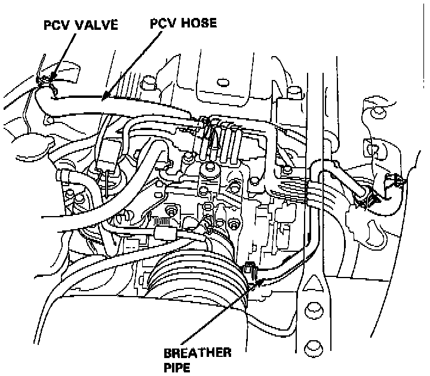
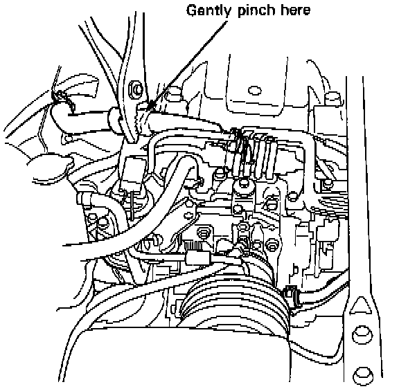

Positive Crankcase Ventilation: Testing and Inspection
INSPECTION
1. Check the positive crankcase ventilation hoses and connections for leaks and clogging.

2. At idle, make sure there is a clicking sound from the positive crankcase ventilation valve when the hose between positive crankcase ventilation valve and intake manifold in lightly pinched with your fingers or pliers.
- If there is no clicking sound, check the positive crankcase ventilation valve grommet for cracks or damage. If the grommet is OK, replace the positive crankcase ventilation valve and recheck.